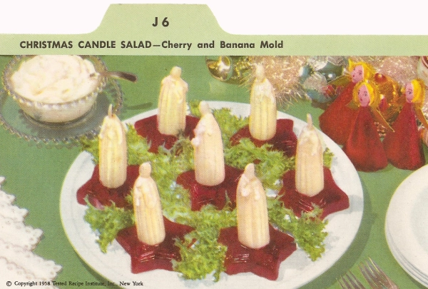

Christmas Candle Salad Recipe.......?

Image Credits: Vintage Recipe Cards
Description
This one has crossed the line of weirdness into something? Seven bananas on gelatin molds with a little dab of mayonnaise on top of each banana. Clearly, the creator had a goal in mind
Ingredients
- 1 1/2 envelopes ( 1 1/2 tablespoons) unflavored gelatin
- 1/3 cup cold water
- 2 cups canned cranberry juice cocktail
- 4 ripe bananas
- 8 salted almonds
- Mayonnaise
- Salad greens
Steps
- Soften gelatin in cold water.
- Heat cranberry cocktail to boiling; add to gelatin and stir to dissolve gelatin.
- Pour into 8 small, star-shaped molds.
- Chill until firm; unmold. Cut out and remove a small circle from center of each star the same diameter as the bananas.
- Peel bananas; cut in halves, crosswise. Insert 1/2 banana in center of each of each star as shown.
- Top each “candle” with a salted almond for a “flame”. Add a little mayonnaise to look like melted wax.
- Serve on salad greens with mayonnaise.
Servings
Makes 8 servings.
Recipe Credits
Recipe taken from www.vintagerecipecards.com
Website Navigation
Home Page
Top of Page
Next Recipe